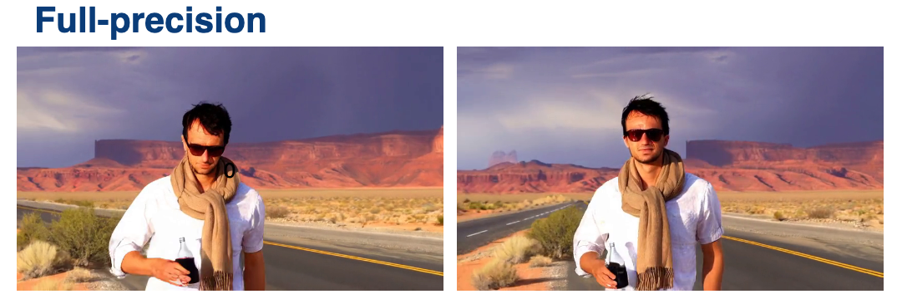
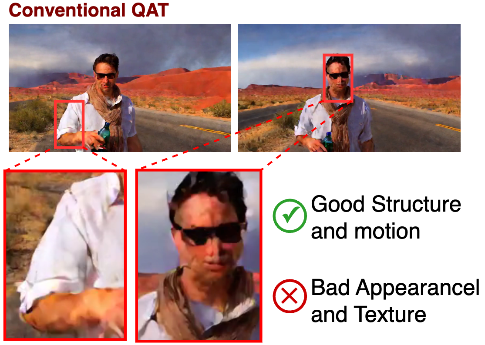
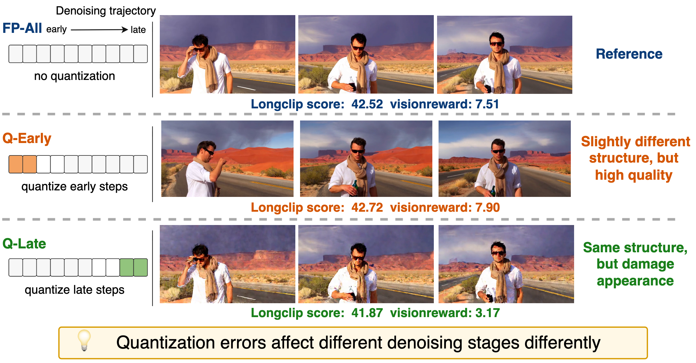
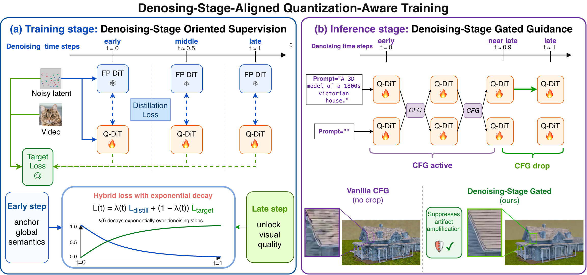

Simplicity
Minimal changes. Integrates quickly with existing training and inference pipelines.
Preserve the structure. Recover the detail. Train quantized video diffusion models in alignment with the distinct role of each denoising stage.
Minimal changes. Integrates quickly with existing training and inference pipelines.
Across models and scales. Works across Wan and CogVideoX at multiple sizes and resolutions.
Stable gains. Averaging +2.22 VBench at INT4 and +3.34 at INT3.
Conventional QAT does not fail uniformly: early-stage perturbations are relatively mild, while late errors destroy detail and texture.

Uniform QAT retains the scene composition and temporal motion, but fails to recover high-frequency appearance and texture.

The same perturbation has sharply different effects along the denoising trajectory.
Slight layout changes, while overall visual quality remains high.
Visible artifacts emerge and fine detail breaks down.

Quantized video diffusion models should be trained according to the role of each denoising stage.
Teacher anchoring stabilizes early structure, then smoothly yields to the native target loss so late stages can reconstruct detail.
Classifier-free guidance is gated near the end of denoising, preventing conditional mismatch from amplifying quantization noise.

Explore eighteen INT4 DSAQuant outputs across three Wan model scales. Each collection cycles automatically between two groups of three samples.
6 samples · INT4 DSAQuant
6 samples · INT4 DSAQuant
6 samples · INT4 DSAQuant
Switch between system-level comparisons and ablations, then choose a model family.
We would like to thank Yichong Lu, Jiahao Wang, Yufeng Yuan, Nan Zhou, Jiahao Shao, and Yudong Jin for their insightful discussions.